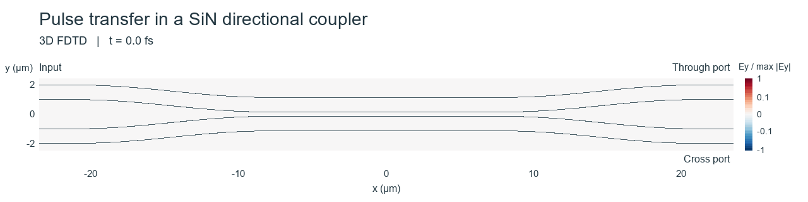

An eigenmode sweep set the gap at 300 nm. A 3D FDTD sweep then tested how the S-bends and straight section route power between the through and cross ports.

A TE pulse in the upper guide couples into the lower guide as the gap narrows. Red and blue show the signed instantaneous E_y on a shared nonlinear scale. The straight section is 16 µm.
In the uniform cross-section, the even–odd mode splitting decreases with gap. The first full-transfer length rises from 17.33 µm at a 200 nm gap to 171.10 µm at 1000 nm. At the selected 300 nm gap, the uniform-section prediction is 23.55 µm.
The archived layout uses a 12 µm straight section to illustrate the geometry. Each end uses a 13 µm transition. For that straight length, the simulated sum of the two output TE mode powers is 97.26% of the injected power.
At 1550 nm, the 16 µm case gives the highest sampled cross-port net flux, 98.35% of the injected power. Its cross-port fundamental TE mode carries 97.79%. At 36 µm, the through-port net flux reaches its sampled maximum of 97.05%.
The brighter output switches from cross at 16 µm to through at 36 µm. All 13 layouts share a linear scale for normalized |E|². Gray marks the area outside the monitor.
The S-bends also transfer power. The full-device sweep gives the straight length needed to reach each port.